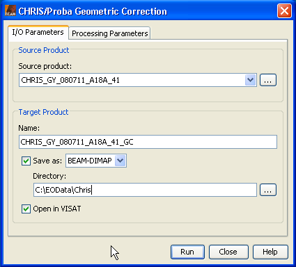
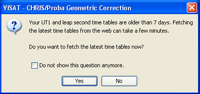
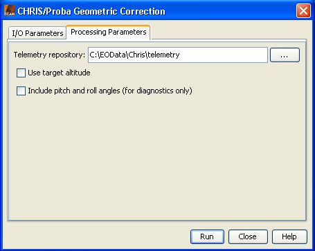

| CHRIS/Proba Geometric Correction | |
CHRIS/Proba is a system designed for multi-angular image acquisition of a given target, with the capability of along-track and across-track pointing increasing its overpass frequency. In order to increase the radiometric signal the platform performs a slow-down manoeuvre consisting in rotating while scanning to keep the target for a longer time under the sensor. Besides, the scan direction is reversed during the acquisition of the second and fourth images to reduce the acceleration needed for the operation. These characteristics introduce strong perspective distortions, especially for the first and last images with larger observation zenith angles, which are difficult to remove by other approaches.
Many applications require the images to be geometrically referenced and/or rectified. In particular for those that make use of multi-angular information the geometric processing must be very accurate.
The proposed approach for the geometric correction of CHRIS/Proba is based on the parametric modelling of the acquisition process. It makes use of the satellite's position, velocity and pointing at the moment of line acquisition, projecting the line of sight onto the Earth's surface to calculate the geographical coordinate of each pixel. The coordinate map can then be used for the ortho-rectification of the images.
In principle the algorithm does not require any user input, since it is based on the geometry of acquisition. Unfortunately the Proba platform does have a pointing problem, which has not been identified yet. Therefore, at least a single ground control point (GCP) per image is required in order to compensate for the de-pointing, although the precision of the single-GCP correction is not good enough. Three GCPs per image provide satisfactory results, and nine well distributed GCPs per image result in an excellent co-registration of all 5 images, for the tested cases (all in Barrax).
The choice of the orbital parametric approach is based on the particular requirements the acquisition process of CHRIS/Proba imposes on other existing methods for geometric correction.
The GCP method requires a quite large number of points for an accurate geometric correction (at least 30, and more than 50 for high accuracy over flat terrain), and they need to be evenly distributed. These requirements exists for each image in the acquisition set
An alternative method is based on the photogrammetric equation applied to the five images, but it makes the assumption that each image is acquired instantly from a fixed point in space, which is not the case for CHRIS/Proba. In order to compensate this difference in the acquisition assumptions the use of GCPs distributed through the image is necessary
The overlap of the five images is not too high, around 65% (estimate) due to de-pointing, but even with perfect pointing, larger observation angles provide different spatial coverage due to perspective. Therefore the co-registration of the five images is only possible in a portion of each image, which reduces the accuracy in the excluded areas. This makes necessary a high-resolution reference image for the selection of GCPs.
Even if the requirements of these methods were met, there is the unsolved problem of open water targets, where it is not possible to use GCP at all, except for very few pixels in the best case. The same situation appears in the case of cloudy images, rendering useless scenes that might have still some useful portions.
The inputs needed by the algorithm are: telemetry with the satellite position, velocity and image timing, target centre coordinate, and, for doing an ortho-rectification, a local digital elevation model (DEM). The outputs of this algorithm consist on the coordinates map in IGM files, or the rectified images if so desired. As side product, observation angle maps can be produced for each image.
It must be noted that the method requires the corresponding telemetry for each acquisition.
An archive of updated telemetry data is accesible at http://194.78.233.110/products/data/CHRIS_Additional_data/index.html. Older packed telemetry data can be downloaded from http://www.brockmann-consult.de/beam/data/Archive_CHRIS_Tags_12000_38000_Telemetry_Data.zip. The algorithm requires that archive is available unpacked on the local file system.
In order to find the corresponding telemetry files for a given acquisition the user has to follow these steps:
First download and unpack the CHRIS telemetry data, which are a prerequisite for the geometric correction. Then carry out the geometric correction:
+---+---+---+
| 1 | 2 | 3 |
+---+---+---+
| 4 | 5 | 6 |
+---+---+---+
| 7 | 8 | 9 |
+---+---+---+
Besides latitude and longitude, the user may specify a GCP's
altitude by adding something like Madrid (alt[m] =
750) to the description of a GCP. This is optional and not
required, but improves the calculation of the instrument's pointing
especially in areas with strong topography. If not provided, the
target's altitude is used.
Instructions on how to use a DEM can be found in the VISAT Help by searching for DEM.
gpt which is located in the BEAM
bin directory. For further information type
gpt chris.PerformGeometricCorrection -h at the
command prompt.
The geometric correction adds grids for latitude and longitude, as well as view azimuth and zenith angles to an existing CHRIS/Proba product.
Selecting the Geometric Correction... command from the VISAT tool menu pops up the following dialog:

The user will be asked to update the auxiliary time tables, which are included in the module. The required time tables are updated at ftp://maia.usno.navy.mil/ser7/ every week. The user must let the time tables be updated regularly, if he works with recent CHRIS/Proba products.

Name: Here the user specifies the name of the source product. The combo box presents a list of all products open in VISAT. The user may select one of these or, by clicking on the button next to the combo box, choose a product from the file system.
Name: Used to specify the name of the target product.
Save as: Used to specify whether the target product should be saved to the file system. The combo box presents a list of file formats, currently BEAM-DIMAP, GeoTIFF, and HDF5. The text field allows to specify a target directory.
Open in VISAT: Used to specify whether the target product should be opened in VISAT. When the the target product is not saved, it is opened in VISAT automatically.

Telemetry repository: This field is used to specify the directory, which contains the CHRIS telemetry data. Note that the parent directory of the source product is searched for CHRIS telemetry data before the local repository is.
Use target altitude: This field is used to specify that the nominal target altitude shall be taken into account when calculating the longitude and latitude coordinates, i.e. the pixel lines-of-sight are intersected with a modified WGS-84 ellipsoid, which is increased by the nominal target altitude. Note that the resulting geo-coding is more accurate when option has been checked, but not suitable for ortho-rectification..
Include pitch and roll angles: This field is used to specify that the instrument pitch and roll angles, which are calculated, shall be included in the product. This option is for diagnostics only.
Run Creates the target product. The geometric correction is actually deferred until the target band data are accessed, either by writing the product to the file system or by viewing the band data. When the Save as option is checked, the atmospheric correction is triggered automatically.
Close Closes the dialog.
Help Displays this page in VISAT Help.